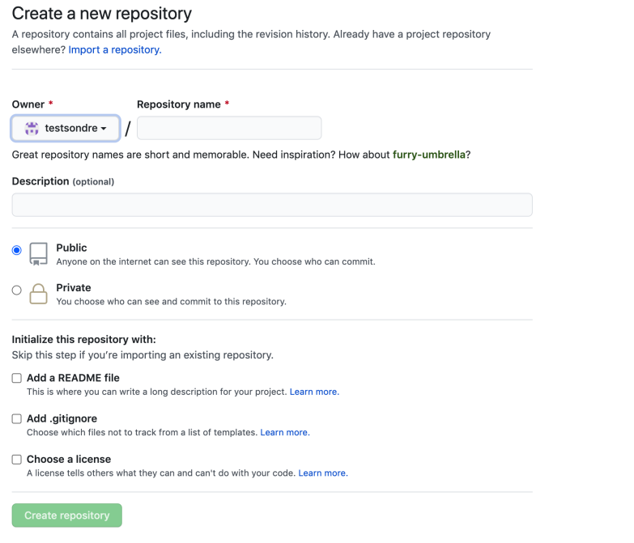
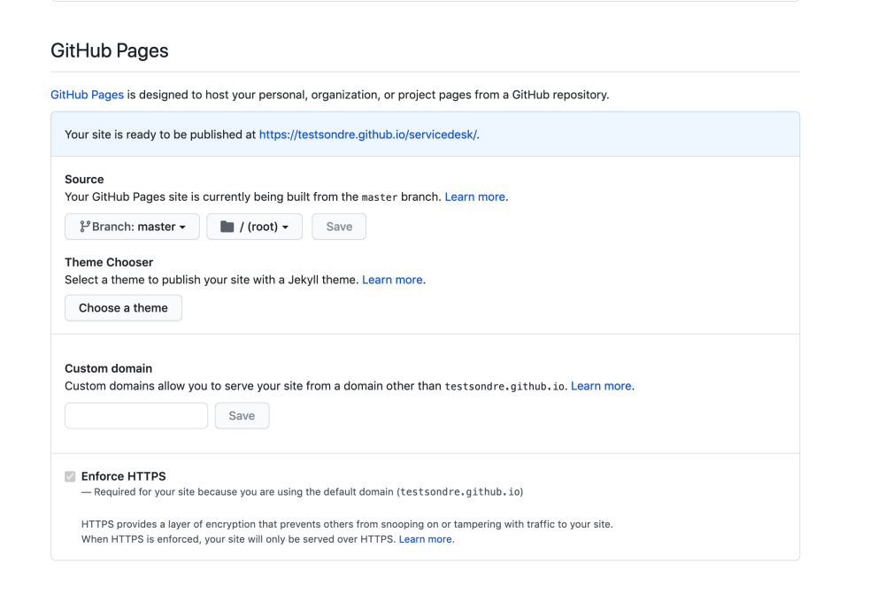

►Først må du søke opp GitHub.com eller trykke Her .
►Videre velger du brukernavn, skriver inn din e-post adresse og lager et solid passord.
►Etter det vil du få en bekreftelses mail som du må godta, når det er gjort har du en bruker.
►Først trykker du på New, (den grønne knappen til venstre på nettsiden).
►Velg navn, og eventuelt en description.
►Velg public så andre kan se den.
►Velg READ me file.
►Trykk på add file.
►Så trykker du på create new file.
►her skriver du inn det du vil ha på nettsiden din, du kan også kopiere inn tidligere produserte HTML-dokument.
►Når du har skrevet det du vil trykker du på commit new file.
►Gå inn på settings.
►Inne på settings blar du ned til GitHub Pages
►Her må du velge hvilken branch du skal opne fra, og hvilken mappe.
►Mappen /root søker etter index direkte fra branchen du har valgt.
►Save, også vil det komme en URL til nettsiden du har lagd.